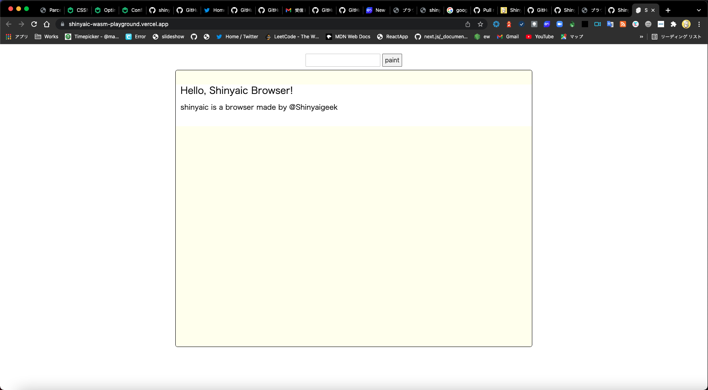
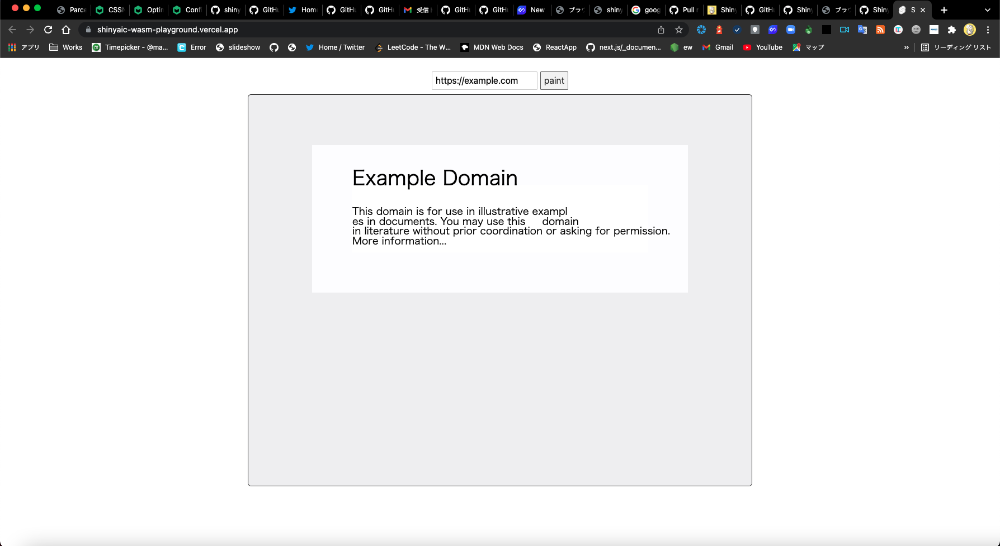

ブラウザの上でブラウザを動かす
初めに
こんにちは, しにゃい/Shinyaigeek です.
趣味でちまちまと作っていた自作ブラウザ Shinyaic を Chrome 上で動かすことができたので, それについて勉強ノートを書こうと思います.
最初に, 実際に Chrome 上でどのように自作ブラウザが動いているかの様子を載せたいと思います.
<input /> の値が空の時は paint ボタンを押すとこちらで用意したHTML & CSSで描画される

example.com を入力に入れると, いい感じに描画される

(実はそもそも自作ブラウザが開発途中で, example.comくらいしかまともに描画できませんがそこはご了承ください...)
Shinyaic Wasm Playground から実際に Chrome ブラウザの上で自作ブラウザを動かすことができます.
playground 自体のリポジトリは https://github.com/Shinyaigeek/ShinyaicWasmPlayground です.
また補足になるのですが, ブラウザ という言葉がどこまでを含むのか, についても先に決めておきたいと思います. 本稿ではブラウザは HTML や CSS を受け取って, それを元に描画するところ, ある種の HTML Rendering Engine とも言える部分をブラウザとして進めていきます. なので, JS Engine や HTTP 通信をする, といった部分は本稿の対象外となります.
本稿ではこの自作ブラウザの実装についての詳細には触れるつもりがありません, 興味がある方は以下のスライドを見てくださると幸いです.

ブラウザの仕組み概略図

ブラウザの仕組みの概略図をおおまかに書くとこのようになっています. 本当は描画の処理はもう少し細かいんですし, ブラウザ固有の部分もあったりするのですがそこまで突っ込むと本題から外れてしまうため本稿では割愛します.
まず HTML から DOM を構築, CSS から CSSOM を構築して, それらをもとに RenderTree を構築します. この RenderTree には描画に必要な情報が格納されます. DOM は Document Object Model という名の通り, HTML のマークアップの構造に基づいた情報が格納されています. 例えばこのノードはH1要素である...と言ったこと, あるいは <head /> 要素 や <meta /> 要素など描画されるわけではない要素についてのノードも格納されています. 一方 RenderTree は描画に必要な情報のみが格納されるので, display: none; が付与されていたりあるいは <head /> 要素といった, 描画されない要素のノードは含まれません. また基本的にはそのノードが HTML における何タグであるか, といった情報も削げ落ちており, どんな Node であるか (Block か Inline か Scroll か etc...) か, そしてどんなスタイルが適応されるか, といった情報が格納されます.
RenderTree を構築すれば, 次はそれを元に矩形情報を計算します. このノードがどれくらいの大きさで, どの位置に描画されるか, ということを計算して, それが完了すれば実際に描画処理を行います.
ブラウザ on ブラウザ
このブラウザを動かすための処理のうち, 実際にブラウザ上で実行できる部分はシンプルなブラウザであれば意外に多いということに上のセクションで気付く方もいらっしゃるかと思います.
HTML -> DOM にする処理や, RenderTree を構築する処理は OS のあれこれに依存している処理というわけではないので, 普通にブラウザ上のランタイムでも実行することができます. 今回は自作ブラウザを Rust で実装していたので, WASM へと compile した上でそれをブラウザで動かしていましたが, 普通に JavaScript で書けばそのまま動かすこともできます.
単純に実装したブラウザがブラウザ上で動かすことが難しい主な箇所は, 描画処理と矩形情報を算出する処理となります. というのも僕の自作ブラウザや, 世の一般的なブラウザといったネイティブアプリが行う OS の低レイヤのAPIを用いて行われている描画処理をそのまま Web で行うってできなくない？となるのは至極当然のことと言えるでしょう. また矩形情報の算出も矩形情報を得るためにはこういった文をこのフォントサイズでこのフォントで描画するとどれくらいの幅, 高さをとるか, やあるいはどれくらいの window サイズで描画するか, といったことに依存してしまい, こうした処理も一筋縄ではいきません.(icedのように, for Web な出力もできるGUI Library for Native Appもありますが, 流石に即オチが過ぎるので今回はそれに頼りません)
描画する処理, 矩形情報を算出する処理をブラウザ上で実行するために, これらの処理を for Web として Canvas API で行うよう実装できれば, Web上で, ブラウザ上で自作ブラウザを動かすことが可能なのでは? というのが本稿の概要であり, 今回の趣味開発(?)の原点発想となります.
nativeでの実装
僕の自作ブラウザでは, iced という描画エンジンを利用しています.
それありきで, 以下のような実装をしています (細かい実装は割愛しています).
textからそれがそのフォントでそのフォントサイズで描画されるとどれくらいの幅, 高さを取るか算出する処理
pub fn get_font_rendered_size(&self, width: f64, text: String) -> PaintFontRenderedRect {
let ctfont = self
.font
.native_font()
.clone_with_font_size(self.size as f64);
let font = ctfont.bounding_box();
// 細かい実装は割愛
PaintFontRenderedRect {
width: width,
height: height,
}
}
RenderObject をもとに描画する処理
use iced_graphics::Primitive;
fn create_block(render_object: RenderObject) -> Primitive {
Primitive::Quad {
...
}
}
fn create_text(render_object: RenderObject) -> Primitive {
Primitive::Text {
...
}
}
このように RenderObject をもとに, 矩形情報を計算しそれを元に iced の Primitive という単位に変換します. create_block では「この位置でこの大きさで, この背景色のブロック」というのを生成します. 同様に create_text では「この位置でこのフォントでこの文字」というのを生成します.
これにより生成された Primitive を iced に食わせることによって実際にネイティブアプリとして描画することが実現されています.
Webでの実装
Web での実装では, これを Canvas API ベースのものに置き換えます.
まず, RenderTree の構築処理までと Layout 処理の一部は, native で使われている実装と共通のものを使いまわせるので, それ以降の,
- Layout処理におけるこの文をこのフォントで描画したときどれくらい幅, 高さをとるかの取得
- 実際に描画する処理
をWebでも動くようにするために, Canvas APIによって実装します.
- /core: RenderTreeの構築までと, 一部の句形情報算出のための処理
- /native: nativeでの処理
- /wasm: webでの処理
とpackageを分けて, native, wasm から core に依存する形で実装します.
それありきで, Web で動かすための /wasm package では以下のような実装をしています. (細かい実装は割愛しています)
textからそれがそのフォントでそのフォントサイズで描画されるとどれくらいの幅, 高さを取るか算出する処理
pub fn get_font_rendered_size(&self, width: f64, text: String) -> PaintFontRenderedRect {
self.canvas_context.set_font(...);
let text_rect = canvas.measure_text(...).unwrap();
let text_width = text_rect.width();
let height = text_rect.actual_bounding_box_descent() + text_rect.actual_bounding_box_ascent();
// 割愛
PaintFontRenderedRect {
width: width,
height: height,
}
}
RenderObject をもとに描画する処理
fn create_block(render_object: RenderObject, canvas_context: CanvasContext) -> Primitive {
canvas_context.set_fill_style(...);
canvas_context.fill_rect(...);
}
fn create_text(render_object: RenderObject, canvas_context: CanvasContext) -> Primitive {
canvas.set_fill_style(...);
canvas.set_font(...);
}
web-sys moduleから, Canvas APIにアクセスして, よしなに矩形情報の算出, 描画を行います.
WASM から, このように HTML を入力にとり Canvas 上に描画するところまで実行することができました. やはり標準化されている仕様に則って当たり前のことを当たり前にすれば変な遊びもできてしまうので楽しいですね.
終わりに
本稿を通じて少しでも自作ブラウザ, 車輪の再発明って楽しそうだなと感じていただければ幸いです. また, 最近 OSS や卒論にかまけて開発が止まっていますが, 自作ブラウザ Shinyaic を見ていただいたり面白いと思ったなら star をつけてくださると励みになります！
ブラウザの中でブラウザを動かせるようになったので, 次はブラウザの中でブラウザの中でブラウザを動かしたいと思います.